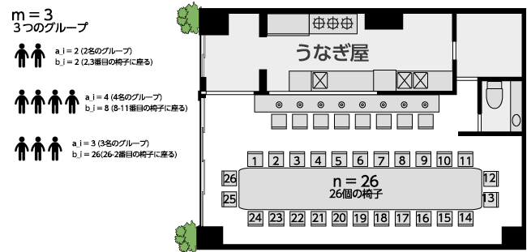

Code Editor -JavaScript- |
長テーブルのうなぎ屋 |
経過時間：
メニューへ戻るうなぎ屋にはとても大きい長テーブルがあり、テーブルの周りにｎ個の座席が配置されています。
座席には、時計回りに１,２,．．．,ｎと番号が振られています。
座席はテーブルの周りに配置されているので、座席番号ｎの座席と１の座席は隣接しています。
今、ｍ個のグループの人達が座席に順番に座りに来ます。ｉ番目（１≦ｉ≦ ｍ）のグループの人数をａ＿ｉ人とします。
彼らは、長テーブルに並んだ座席のうち、ある連続するａ＿ｉ個の座席に一斉に座ろうとします。
ただ困ったことに、お客さんは気の短い方が多く、それらの座席のうち、いずれか一つでも既に先客が座られている座席があった
場合、一人も座らずにグループ全員で怒って帰ってしまいます。
入力では、ｉ番目のグループが座ろうとする連続した座席の位置は、整数ｂ＿ｉにより指定されます。
ｉ番目のグループは、座席番号ｂ＿ｉの座席を始点として、そこから時計回りにａ＿ｉ個分の座席を座ろうとします。
最後のグループが座りに来た後、無事に長テーブルの座席に着席出来ている人数を出力するコードを作成して下さい。
入力
入力はｍ＋１行からなります。
１行目にはｎ（座席数）とｍ（グループ数）で入力されます。
続いて、ｉ＋１行目（１≦ｉ≦ ｍ）には２個の整数ａ＿ｉ（グループの人数）とｂ＿ｉ（着席開始座席番号）が入力されます。
出力
最後のグループが座りに来た後、無事に座席に着席できている人数を出力して下さい。
では、挑戦して下さい。
長テーブルは下図のように席が円を描いています。
お客さんの座り方には最後の座席から０をまたいで何人か座ることも考えうるということです。



出力値
期待する出力値
ヒント
・ノーヒントで頑張って下さい
・ノーヒントで頑張って下さい